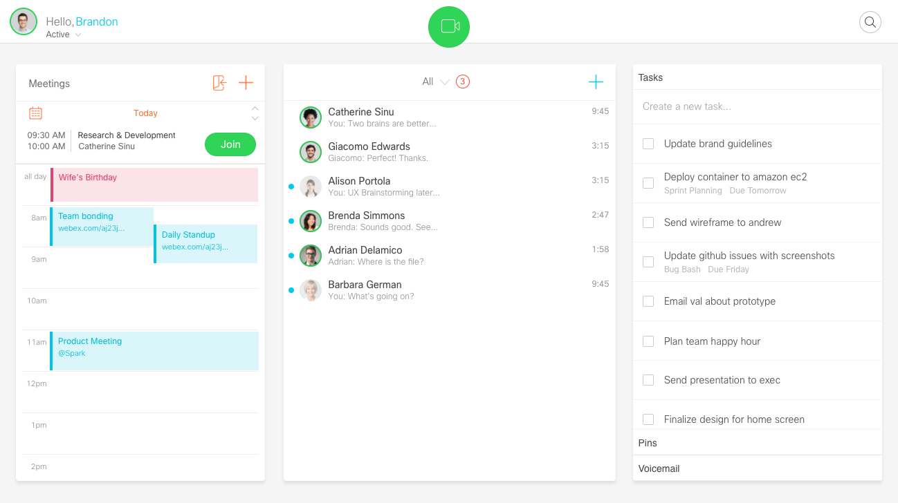

Spark WebRTC V1
In this prototype, you will experience the calander and the task systems. Because of the WebRTC, you will also be able to experience an online meeting with other people.
screen shots

Here are the links.
Prototype
https://wzpo.github.io/Spark/Spark-DesktopConcepts2.html
Clear server cache tool
https://uxccds.github.io/SparkMobile/webrtc/page/clear.html
Prepare
1) Make sure the cache on the server has been cleared. Run the Clear server cache tool once.
2) Use headphone if you want to test the audio. (Otherwise you may hear some noise).
3) Make sure you can connect to Google server. (Cisco VPN will sometimes block WebRTC).
4) Enable Chrome to use the your camera.
Usage
1) Open the prototype in Chrome. Click the 'Join' button to enter a meeting.
2) Open a new Chrome tab or use another device, do the same thing in step 1. Then you will start a 1v1 meeting. You can continue to add attendees by repeating step 1.
3) You can experience the space balls in the meeting.
4) You can drag people to the calendar to schedule a meeting quickly.
5) Click 'Product Meeting' in the calendar to see more information.